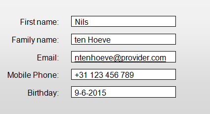

The Introspect Framework
Introspect is a light weight Java Application Framework. It provides a framework for writing business like applications for viewing and editing information in forms and tables (not for graphical applications such as games)
With the introspect framework you only need to create domain classes. Introspect provides you the user interface, without writing any user interface code. This means that the Introspect Framework is ideal for rapid prototyping, rapid development or to learn programming (e.g. to teach: Object Oriented Programming or Domain Driven Design).
The Introspect framework provides different user interface implementations that you can use for:
- Junit test
- Command line
- The desktop (using JavaFx)
- Mobile devices (still to be developed, using Android )
- The web (still to be developed, using Vaadin)
- And possible others in the future
If you want to start coding right now (even if you are a beginner) please go to the IntrospectApplicationProjects section. If you want to know more about the Introspect Framework keep reading....
Why the Introspect framework was developed
Almost everyday new libraries, frameworks and tools are being released by the developer community, many of which reinvent the wheel.
This is called the "Yet Another Framework Syndrome" (YAFS), or in more general terms "Not Invented Here" (NIH). While innovation is something we should all welcome, YAFS can lead to confusion and frustration for users because there's a big risk of it introducing more noise than value.
So why did I develop a new framework while there are so many Java application frameworks out there?
Reason 1: Because its fun
Probably the best reason ever!Reason 2: Because I wanted to learn
The journey of developing yet another framework has thought me more than I could have learned implementing an existing framework. Specifically on how other frameworks solved issues that I run into.Reason 3: Because I wanted to do it different
I love the thoughts behind the Naked Objects Framework (for .net) and the Apache Isis Framework (for Java). But looking at the Apache Isis Framework, there are several things I wanted to do it different in the IntrospectFramework (good or bad is all open for debate):- The domain objects and service objects (often repository objects) usually extend a convenience class that contains methods to interact with the Apache Isis framework/ object container. Extending such a class is not mandatory, because you can implement these methods in your objects, but to me this still ignores the principle of "Naked objects" or POJO’s .
- I personally dislike the way Apache Isis manages the editing of objects. This is very tightly linked to its persistence framework. I however believe that objects do not necessarily need to be persisted after its been edited. I prefer a different approach: domain objects can be passed to a method as a method parameter. This method parameter can be edited by a user before a method is executed (depending on how the method is annotated). The domain object/ method parameter may then be handled by a InfrastructureObject like a persistence service (or not at all).
Reason 4: Because I could not find what I needed.
I have not found an framework that provides an out of the box User Interface for both desktop, mobile devices, web interface, command line interface, etc. They are probably out there (Naked Objects and Isis coming close) but I haven't found one (or one that I liked).Introspect Core Values
Introspect is designed around the following core values:
Based on the Naked Objects Design Pattern
See the Wiki page on the Naked Objects Design Pattern:- All business logic should be encapsulated onto the domain objects. This principle is not unique to naked objects: it is just a strong commitment to encapsulation.
- The user interface should be a direct representation of the domain objects, with all user actions consisting, explicitly, of creating or retrieving domain objects and/or invoking methods on those objects. This principle is also not unique to naked objects: it is just a specific interpretation of an object-oriented user interface (OOUI).
- The user interface should be created 100% automatically from the definition of the domain objects. Introspect uses reflection instead of code generation (hence the name of the IntrospectFramework).
Provide a good structure for applications
- Enforce separation of concerns (see IntrospectArchitecture).
- Facilitate domain driven design.
- The Introspect Framework should not create a vendor lock-in (not that there is such a thing as an Introspect Framework Vendor, since it is open source). DomainObject's, ServiceObject's and InfrastructureObject's should have no (or almost no) dependencies with the Introspect Framework so that the Introspect Framework could easily (within a few hours) be replaced with another dependency injection framework (such as Spring, Guice or Pico container, etc...) or visa versa.
- The introspect framework exists of a few basic interfaces like UserInterfaceController and Providers that can have multiple different implementations.
Write once and deploy as different type of applications
The IntrospectFramework allows you to write your code once, and deploy it as different types of applications without much of a hassle. See the IntrospectApplicationProjects for more information.
Lightweight
The IntrospectFramework framework should only be a few kilobytes in size.
Simple to configure
The Introspect framework has no configuration files (see “Code or configuration files” section in Martin Fowlers article for the arguments why).There are 3 things that need to be configured:
- Which implementations of the UserInterfaceController and Provider's are going to be used by the IntrospectApplication.
- Which ServiceObject classes and InfrastructureObject classes are going to be used by the IntrospectApplication.
- The ObjectBehavior of DomainObject's and ServiceObject 's (how the domain needs to handled by the IntrospectApplication)
Furthermore the Introspect framework prefers “Configure by Exception”. This means that the Introspect framework uses reasonable defaults wherever possible. These default values can be overridden by the developer.
Introspect License
Introspect is an open source project under the GNU Lesser General Public License. The license can be found here.
Architecture of an introspect application
The Introspect Framework helps you to create a multi layer architecture for your application. A multi layer architecture has several design principles:
- Separation of concerns (separate responsibilities within the application into different layers).
- Low coupling between layers, high cohesion within them.
- User interface modules should contain no business logic.
- Layers should be testable individual.
- Business logic layers contain no user interface and don't refer to user interface modules.
- No circular references between layers.
- Business layer only uses abstractions of technological services.
- Lower layers should not depend on upper layers.
- Layers should be shy about their internals.
- Layers may share infrastructural aspects (eg security)
- Inbound external interface modules (eg web service handlers) should not contain business logic.
These multi layer architecture design principles try to prevent spaghetti code, which is hard to extend, hard to trouble shoot, hard to test and hard to keep bug free.
There are many different opinions on the number of layers, the names of the layers and what each layer should do (see these examples). The definition of layers from Eric Evans Domain Driven Design approach is likely the most commonly used. The most important thing is that your multi layered architecture complies with the design principles above.
{kind=link}
The IntrospectArchitecture uses the following layer definition, which is pretty close to Eric Evans Domain Driven Design approach.:
- UserInterfaceLayer
- ServiceLayer (called "application layer" by Eric Evans)
- DomainLayer
- InfrastructureLayer
- ProviderLayer (extra layer for cross cutting concerns)

Red objects are provided by the Introspect framework
Yellow objects need to be written or included by the developer.
Dependency Injection Container
The IntrospectFramework is a dependency injection framework and consists of several dependency injection containers.
If you new to Dependency Injection I recommend reading Martin Fowler's article in which he explains the basics dependency injection.
Each DependencyInjectionContainer is responsible for:
- Creating new instances of types that are registered to a DependencyInjectionContainer with the IntrospectApplication .get...Class() or .get...Classes() methods
- Linking dependencies (references to other objects) to these new instances (using constructor injection)
- Caching these new instances, if we only need one instance (like a singleton)
The IntrospectArchitecture consists of several layers. Each layer has its own DependencyInjectionContainer that is for managing the objects in the same layer:
- UserInterfaceLayer: UserInterfaceController object is managed by a UserInterfaceContainer. The UserInterfaceContainer knows the ServiceContainer
- ServiceLayer: ServiceObject's are managed by a ServiceContainer. The ServiceContainer knows the DomainContainer
- DomainLayer: DomainObject's are managed by a DomainContainer. The DomainContainer knows the InfrastructureContainer
- InfrastructureLayer: InfrastructureObject's are managed by a InfrastructureContainer. The DomainContainer knows the ProviderContainer
- ProviderLayer: Provider object's are managed by a ProviderContainer.
Constructor Injection
The IntrospectFramework favors constructor injection (see Martin Fowler's easy to read article for the arguments why).
All objects within an IntrospectApplication can have references to (may know) other objects. These reference objects are injected into an object as constructor parameter during the creation of the object by the DependencyInjectionContainer of that specific layer. This constructor parameter can than be linked to a private final field, so that it can be used throughout the object.
In example:
public class ProductService {
private final ProductRepository productRepository;
public ProductService(ProductRepository productRepository) {
this.productRepository = productRepository;
}
public List<Product> findProduct(ProductSearchCritiria searchCritiria) {
return productRepository.findProduct(searchCritiria);
}
// other action methods...
}
It is good practice to link the constructor parameter (reference object) to a private final field, so that it is encapsulated and immutable.
If your object needs a lot of references to other objects (too many constructor parameters), your object has most likely to many responsibilities, which could be solved by splitting up this object.
Note that you can only inject reference object types (use constructor parameters types) that are known to the that specific layer:- The IntrospectApplication class can be injected in all layers
- You can only inject objects of the same layer or lower layers (see IntrospectArchitecture). The IntrospectFramework tries to prevent that objects in the lower layer know (have references to) objects in the higher layers because this is against several design principles of an layered architecture
- You can only inject objects that are registered to the IntrospectApplication by overriding the get...Classes() or get...Class() methods.
The Introspect Application
IntrospectApplication is used as initialization parameter for the Introspect framework.
An Introspect application has several purposes:
- It provides the name, icon and description of the application (see ObjectBehavior)
- It provides the location of the distribution package (jar, war)
- It provides the UserInterfaceController type, needed for the application with the IntrospectApplication.getUserInterfaceControllerClass() method. Each application type (commandline, swing, vaadin) requires different implementations of the UserInterfaceController
- It provides a list of ServiceObject types with the IntrospectApplication.getServiceClasses() method. ServiceObjects basically provide the actionable/menu items
- It provides a list of DomainObject types that need to be created using dependency injection, with the IntrospectApplication.getDomainClasses() method.
- It provides a list of InfrastructureObject types with the IntrospectApplication.getInfrastructureClasses() method. InfrastructureObjects basically communicate to the outside world (i.e. data base access objects, email clients, soap clients, etc)
- It provides the Provider types with the IntrospectApplication.get...ProviderClass() methods. Provider Objects help with cross cutting concerns. Each application type (commandline, swing, vaadin) requires different implementations of the providers
Each application type (command line, Android, Vaadin, etc..) has its own implementation of IntrospectApplication to help initializing the framework. See the type hierarchy of IntrospectApplication to learn which classes can be used and view their java doc to learn how to use them.
If you create a new application you will be extending one of these classes. You will only need to implement some of the methods mentioned above (at least the IntrospectApplication.getServiceClasses() method).
An example of a desktop application:
public class AcmeWebShop extends IntrospectApplicationForSwing {
// constructor not displayed
// main method
@Override
public List<Class<?>> getServiceClasses() {
List<Class<?>> serviceClasses = new ArrayList<Class<?>>();
serviceClasses.add(ShoppingCartService.class);
serviceClasses.add(ProductService.class);
return serviceClasses;
}
@Override
public List<Class<?>> getInfrastructureClasses() {
List<Class<?>> infrastructureClasses = new ArrayList<Class<?>>();
infrastructureClasses.add(ProductRepository.class);
infrastructureClasses.add(EmailClient.class);
infrastructureClasses.add(PaymentClient.class);
return infrastructureClasses;
}
}
For more (detailed) examples see the IntrospectApplicationProjects section.
Starting a new Introspect Project
How you create a new Introspect application depends on the type of application type that you want to create.
First decide on the type of application you want to create. Then look up the corresponding paragraph in the IntrospectApplicationProjects section. There you will learn how to create a java project that contains an application class that extends the IntrospectApplication class. This class will initialize and start the IntrospectFramework. This class also contains methods that you need to implement to provide the ServiceObject classes and InfrastructureLayer classes that are required in the application.
The Domain Layer
The Domain layer is the heart of any Introspect application. The domain layer represents:
- The concepts of the business
- The business rules
- The state that reflects the business situation
- Business layer
- Business logic layer
- Domain model layer
The domain layer is basically where all the domain objects are. The DomainContainer is an DependencyInjectionContainer that can be used to create and hold DomainObject's that need dependency injection.
Note that the DomainLayer is a middle layer (see IntrospectArchitecture):- The DomainObjects have NO references to objects in the upper UserInterfaceLayer nor ServiceLayer
- The DomainObjects may have references to the objects in the lower InfrastructureLayer or ProviderLayer, but not visa versa!
Domain Objects
DomainObjects represent entities; the nouns of the domain. If your application domain is a sales application it’s likely that your domain model contains DomainObjects such as: customers, products and orders.
DomainObjects are created by a developer or are reused from an existing application that needs to be re-written. They can be created from scratch or generated from a schema (in example from a database schema, XML schema or web service)
Naming
DomainObjects names are nouns, such as customer, product and order. They basically describe the things that are important in your application. DomainObjects names need to match the Ubiquitous Language (in terms understood by both users and developers).
Presentation
An UserInterfaceController can display domain objects in 3 ways:
- Domain object as form:
 - Domain object as a field in a form:

- Domain object as a row in a table:

Construction
The principle of “naked objects” is that any 'Plain Old Java Object' (POJO) can function as a domain object. In other words: a domain class does not have to inherit from any special class, nor implement any particular interface, nor have any specific attributes.
DomainObjects can be created by different objects e.g.:- By a ServiceObjectActionMethod such as customerService.createNewCustomer()
- By a DomainObjectActionMethod such as shoppingCart.lineItemCreate(LineItem lineItem)
- By a DomainContainer such as domainContainer.getObject(Customer.class)
- By a InfrastructureObject method such as orderRepository.allOpenOrders() or shoppingCartFactory.createForCustomer(Customer customer).
There are 2 ways to create new DomainObjects:
- Creating a new DomainObject with the new keyword:
In example: Order order=new OrderLine() - Creating a domain object using Dependency Injection:
Sometimes you want a new DomainObject to have references to other objects (being other DomainObjects, InfrastructureObjects or ProviderObjects). In example: A Customer object needs a references to a ShoppingCartFactory object. The Customer object can therefore be created by the DomainContainer with Customer customer=(Customer) domainContainer.getObject(Customer.class). The ShopingCart object will automatically be injected as a constructor parameter of the Customer class. In order to create DomainObjects using dependency injection you need to: - Add the reference object as a parameter in the constructor and link it to a private field, so that it can be used throughout the class.
- Make sure that the referenced object type is known by the IntrospectFramework: Its class must be returned by the IntrospectApplication.getDomainClasses() method.
- The object that creates the DomainObject needs to have a reference to the DomainContainer as a constructor parameter, so that that the DomainContainer.get(Class) method can be called to get or create the DomainObject with the required dependencies injected by the IntrospectFramework
Domain object members
Domain objects contain:
- Getter and setter methods (and possible fields): that define properties
- DomainObjectActionMethods: that define user actions
- Methods: that define ObjectBehavior
- Annotations: that define ObjectBehavior
Properties
DomainObjects have state. This means the domain objects contain information that may change over time. This information is represented by properties.
Here is an example of a domain class customer that has the following properties:- givenName
- familyName
- fullName
- bonusMember
public class Customer {
private String givenName;
private String familyName;
private boolean bonusMember;
public String getGivenName() {
return givenName;
}
public void setGivenName(String givenName) {
this.givenName = givenName;
}
public String getFamilyName() {
return familyName;
}
public void setFamilyName(String familyName) {
this.familyName = familyName;
}
public String getFullName() {
return new TitleBuilder().append(givenName).append(familyName)
.toString();
}
public boolean isBonusMember() {
return bonusMember;
}
public void setBonusMember(boolean bonusMember) {
this.bonusMember = bonusMember;
}
}
Properties are a special type of class members and are an intermediate between getter and setter methods and a field. The following 3 sections will explain this in more detail.
Getter methods
- A property always has a getter method, so that other objects can read its value
- The getter method name starts with get, followed by the property name in CamelCase when the property type is NOT a boolean (See the getGivenName() method in the example above)
- The getter method name starts with is, followed by the property name in CamelCase when the property type IS a boolean (See the isBonusMember() method in the example above)
- The getter methods are always public (accessible by other objects)
Setter methods
- A property might have a setter method, so that other objects can change its value. The property is read-only when it does not have a setter method
- The setter method name starts with set, followed by the property name in CamelCase (See the setFamilyName() method in the example above)
- The setter methods are always public (accessible by other objects)
- The setter methods are commonly placed after the corresponding getter method
Fields
- Properties can use fields to hold information in the domain object. These fields need to be private (not accessible by other objects) to ensure encapsulation (See private fields givenName, familyName and male in the example above)
- A property does not need to have a field. The value can be a computation of fields of other properties (such as the fullName property in the example above), or maybe even a value from an InfrastructureObject or a Provider.
- Fields are commonly defined at the beginning of the class
Property types
Property types can be divided into 3 groups:- Value property: A char, string, boolean, number, date, or other primitive data types. The UserInterfaceController will display these types as a textbox. Assuming that the user is allowed to modify that property, they may enter the value by typing in text, which will be validated and formatted according to the value type. Certainly value types may provide alternative mechanisms for user input, such as a calendar-selector for a date field.
- Enumeration property: The UserInterfaceController will display these types as as a combo-box, containing the different enumeration values as text.
- Reference Property: A 'reference property' or 'entity' is one where the type is another DomainObject. Reference properties are thus sometimes referred to as 'associations'. The UserInterfaceController will display a DomainObject property as a textbox, containing the referenced object (as an icon and title) and a menu button. The menu button will open a context menu, that contains ActionMethods to manipulate the property value.
- Collection Property: A 'collection property' is a property that returns an collection of either value properties (primitive data type) or reference properties (DomainObjects). The UserInterfaceController will display these types as a table. If the user clicks on a row a context menu opens, containing ActionMethods to manipulate the property value. Collections must be initialized (collection properties should never return null). Collection properties should not contain large collections. If you have a big collection associated with a DomainObject it is better to return the collection from an ActionMethod in the DomainObject, so that the table is displayed on a new tab.
Property behavior
You can specify certain things about both the behavior and presentation of properties by adding specific attributes or methods. See section ObjectBehavior.Action Methods
Domain objects can contain action methods (see DomainObjectActionMethod section)
The Service Layer
The ServiceLayer (sometimes also called application layer) gives the user access to the DomainObjects so that the user can work on them.
The ServiceContainer is an DependencyInjectionContainer that represents the ServiceLayer and holds and manages ServiceObjects.
Note that the ServiceLayer is a middle layer (see IntrospectArchitecture):
- The ServiceObjects have NO references to objects in the UserInterfaceLayer
- The ServiceObjects may have references to the objects in the lower DomainLayer, InfrastructureLayer and ProviderLayer, but not visa versa!
Service Objects
The word 'service' implies:
- There is a client that needs to be served. For the IntrospectFramework this is the user, trough the UserInterfaceController
- There are activities\ operations. For the IntrospectFramework these are defined as ActionMethod's
- An activity\ operation is done with other things. For the IntrospectFramework these operations are done with or on DomainObject s trough ActionMethod parameters and return values
- The operation relates to a domain concept that is not a natural part of a DomainObject (Entities or Value Objects).
- The interface is defined in terms of other elements of the domain model.
- The operation is state-less
Service objects operations relates to a domain concept that is not a natural part of a DomainObject
ServiceObjects contain ServiceObjectActionMethods. The UserInterfaceController displays these methods as menu items and invokes these methods once a user clicks on the menu item. ServiceObjectActionMethods create or retrieve DomainObjects where the user does not have an existing DomainObject to navigate from.
Service objects define an interface in terms of the domain model
ServiceObjects basically provides the user (via the UserInterfaceController) access to DomainObjects, so that the user can work on them (via the UserInterfaceController).
Service objects are state-less
Quoting Eric Evans: “ServiceObjects should be state-less. State-less here means that any client can use any instance of the ServiceObjects without regard to the instance’s individual history. The execution of the service will use information that is accessible globally, and may even change that global information (have side-effects). But it does not hold state of its own that affects its behavior, as most domain objects do."
ServiceObjects do not have state and therefore should not have properties (no getter and setter methods). My personal opinion is that a ServiceObject with state is a code-smell, which you can solve by moving the ServiceObjectActionMethods that share state (fields) to new or existing DomainObjects.
Service Objects should be flat
Object Orientated Programming favors to put business logic and the validation logic into the DomainObjects (and sometimes InfrastructureObjects) as much as possible. ServiceObjectActionMethods should therefore not contain business logic or validation logic, but delegate the work to collaborations of DomainObjects and InfrastructureObjects, in order to prevent the Anemic Domain Model - anti-pattern.
A web shop example
- The UserInterfaceController class calls the ServiceObjectActionMethod findProduct(searchCriteria) method on ServiceObject: ProductService
- This method will call the findProduct method on the InfrastructureObject : ProductRepository
- This method will return a list of DomainObjects that meet the search criteria
- The UserInterfaceController displays the found list of DomainObjects as a table in a new tab.
Construction
The principle of “naked objects” is that any 'Plain Old Java Object' (POJO) can function as a ServiceObject. In other words: a service class does not have to inherit from any special class, nor implement any particular interface, nor have any specific attributes.
ServiceObjects are instantiated by the IntrospectFramework, and therefore need to be registered to the IntrospectApplication.getServiceClasses() method.
In example:
public class WebShop extends IntrospectApplicationFor... {
@Override
public List
> getServiceClasses() {
List
> serviceClasses = new ArrayList<>(); serviceClasses.add(ProductService.class); serviceClasses.add(ShoppingCartService.class); serviceClasses.add(OrderService.class); return serviceClasses; } // etc... }
ServiceObjects can have references to other objects. These objects are injected into the ServiceObject (see the ConstructionInjection section)
Naming
ServiceObjects are normally named after the DomainObjects that they service and have the suffix 'Service' (e.g. CustomerService, OrderService, etc).
Service object members
Service objects contain:
- ServiceObjectActionMethods: that define user actions
- Methods: that define ObjectBehavior
- Annotations: that define ObjectBehavior
Action Methods
ServiceObjects are all about ActionMethods that represent the main menu items (see section ServiceObjectActionMethod)
The Infrastructure Layer
The InfrastructureLayer contains InfrastructureObject's that provide generic technical capabilities to support the higher layers.
The InfrastructureLayer is also know as:
- Data access layer
- Persistence layer
- Logging Layer
- Networking Layer
- And other services which are required to support the ServiceLayer or DomainLayer
The InfrastructureContainer is an DependencyInjectionContainer that represents the InfrastructureLayer and holds and manages InfrastructureObjects.
- The InfrastructureObjects have NO references to objects in the upper UserInterfaceLayer, ServiceLayer nor DomainLayer
- The InfrastructureObjects may have references to the objects in the lower ProviderLayer, but not visa versa!
Infrastructure Objects
InfrastructureObjects provide generic technical capabilities to support the higher layers. InfrastructureObjects communicate with other systems such as external hardware (like disks), databases, web-services, etc...
Function and naming of InfrastructureObjects
The name of an InfrastructureObjects depends on what it does. It is common practice to use the following naming:
- Communicating with a database:
class names end with 'Repository', e.g.: CustomerRepository, OrderRepository, etc... - Communicating with a web-service:
class names end with 'Client', e.g.: EmailClient, GoogleMapsClient, SOAPClient, etc.. - Creating objects with a factory class:
class names end with 'Factory', e.g.: ReportFactory, etc.. - Logging:
class names end with 'Logger'
Infrastructure Object Presentation
The methods of infrastructure object are unknown to the UserInterfaceController and are not displayed on the User Interface. *
Construction
The principle of “naked objects” is that any 'Plain Old Java Object' (POJO) can function as a InfrastructureObject. In other words: a InfrastructureObject class does not have to inherit from any special class, nor implement any particular interface, nor have any specific attributes.
You can:
- write new InfrastructureObjects.
- reuse InfrastructureObjects from existing projects
- use or extend one of the InfrastructureObjects of one of the IntrospectInfrastructure projects. Open the type hierarchy of the InfrastructureObject, to see all these convenience classes
- or use or extend InfrastructureObjects from other (open source) projects
The Provider Layer
The ProviderLayer contains Provider objects that provide generic IntrospectFramework capabilities (cross cutting concerns) to support the higher layers (see IntrospectArchitecture)
The ProviderContainer is an DependencyInjectionContainer that represents the ProviderLayer and holds and manages Provider Objects.
Note that this layer is the bottom layer (see IntrospectArchitecture ), which means that objects in the upper layers may haved references to ProviderObjects, but not visa versa!
Provider Objects
Providers are responsible for different cross cutting concerns within an IntrospectApplication such as:
- Authorization (see AuthorizationProvider)
- Validation (see ValidationProvider)
- Multi language (see LanguageProvider)
- Notifications (see NotificationProvider)
- File path information (see UrlProvider)
- Object meta information (see ReflectionProvider)
- Version information (see AboutProvider)
Providers may be used by any class within an application.
Providers are interfaces and can have multiple implementations (depending on what type of application you are using/writing). Which implementation of each provider needs to be used within an application is defined in the IntrospectApplication class. You are free to implement your own Provider implementation and register it by overwriting one of the IntrospectApplication.get...ProviderClass() methods
Provider Construction
Provider's are instantiated by the ProviderContainer (see DependencyInjectionContainer) ProviderObjects can have references to other ProviderObjects. These objects are injected into the ProviderObjects (see the ConstructionInjection section.
Provider Presentation
The methods of ProviderObjects are not displayed by the UserInterfaceController.
Authorization Provider
Authorization, means the ability to control what an individual user can see and do within an application, based upon their identity and the role(s) assigned to them.
The AuthorizationProvider facilitates this with methods:Types of AuthorizationProvider
There can be different types of AuthorizationProvider implementations, depending on the authorization mechanism you prefer. In example: you could write an implementation that uses:- hard coded authorization
- file based authorization
- database authorization
- web container authorization (e.g. Apache Tomcat Realm)
- LDAP
- Active directory
- or other
public class AcmeAuthorizationProvider implements AuthorizationProvider {
private final List<User> users;
private User currentUser;
public AcmeAuthorizationProvider() {
users = new ArrayList<>();
users.add(new User("carla", "pasword1", "salesmanager"));
users.add(new User("john", "pasword2", "customer"));
}
public void login(String userName, String password)
throws InvalidNameOrPasswordException {
for (User user : users) {
if (user.isValid(userName, password)) {
currentUser = user;
return;
}
}
throw new InvalidNameOrPasswordException();
}
@Override
public String getCurrentUserName() {
return currentUser == null ? "" : currentUser.getName();
}
@Override
public boolean userInRole(String role) {
return currentUser == null ? false : currentUser.inRole(role);
}
}
Registering an AuthorizationProvider
The AuthorizationProvider is registered to the framework with the IntrospectApplication.getAuthorizationProviderClass() method. By default it returns the DefaultAuthorizationProvider, which always returns true on the userInRole(String) method. You can register another AuthorizationProvider implementation by overriding the IntrospectApplication.getAuthorizationProviderClass() method.
Using an AuthorizationProvider
The AuthorizationProvider is used by the @Hidden and @Disabled annotations (see ObjectBehavior). If you want to use the AuthorizationProvider in your code you need to inject it into your object (see ConstructionInjection)
Validation Provider
The UserInterfaceController sometimes let’s the user edit an DomainObject before it is passed as an ActionMethod parameter (depending on how the ActionMethod is annotated, see ExecutionMode ). The UserInterfaceController then validates the edited DomainObject using the ValidationProvider before the ActionMethod is called.The ValidationProvider will use ValidationAnnotationsTODO_LINK and ValidationMethods_TODO_LINK that are located in the DomainObjects them selves so that they can be validated.
ValidationProvider implementation
There are many validation libraries and frameworks available. The IntrospectFramework complies with the JSR303 by using the Apache Bean Validator (BVal) library, combined with ValidationMethods. You are free to implement or extend your own implementation and register it to your IntrospectApplication by overriding the IntrospectApplication.getValidationProviderClass() method
Language Provider
The LanguageProvider makes multilingual support possible. The IntrospectFramework supports the English language by default because it uses the ClassNames, DomainObjectPropertyNames and ActionMethodnames that are used in the code as part of the Ubiquitous Language (it does not make sense to mix an other language into your code).
Language property files
Texts for other languages are stored in property files. The name of these files need to be: <application configuration folder>/language_<language_code>.properties
Where:- <application configuration folder> These files need to be located at the configuration folder of the application. See PathProvider for more information
- <Language_code> two letter language code (see java Locale)
The language property files comply to the Java .properties standard and thus contain key value pairs.
- The key is an reference to part of the code. Keys have the following format: <packageName>.<classname> or <packageName>.<classname>.<propertyName> or <packageName>.<classname>.<actionMethodName>, followed by .displayname or.description (see examples below)
- The value is the translated text. Special characters are supported with Unicode (\u
e.g. \u20AC=€). There are several free tools available to edit .properties file with good Unicode support.
Examples of key value lines in property files:
- com.acme.order.ShoppingCart.displayname=Winkel wagen
- com.acme.product.ProductService.displayname=Producten
Getting the translated text
The UserInterfaceController will call the LanguageProvider to try and get the appropriate text from the language property files (depending on the selected language in the graphical user interface). If it can’t find this value it will display the default values (in English)
An other way to get a translated text is to inject the LanguageProvider into the object that needs it and use it in your code (see ConstructionInjection)
- TODO CODE EXAMPLE OF VALIDATION TEXTS OR EXCEPTION TEXTS
- TODO EXPLAIN HOW THE LANGUAGE IS SELECTED
- TODO HOW TO SET DEFAULT TEXT OTHER THAN DEFAULT
- TODO EXPLAIN HOW TO GENERATE OR UPDATE LANGUAGE PROPERTY FILES WITH A SPECIAL INTROSPECT APPLICATION
Notification Provider
- TODO What it does
- TODO How you can use it (or explain who uses it)
- TODO Code example
- TODO How to register a custom ... provider
Reflection Provider
The ReflectionProvider provides information on objects ( ClassInfo), properties (PropertyInfo) of ActionMethod (ActionMethodInfo) using reflection. The UserInterfaceController uses this information to know how the user interface should look like and behave. You can use the ReflectionProvider in your code when you need meta information (See ConstructionInjection) TODO Code example
About Provider
The AboutProvider provides the following information on all objects used in an IntrospectApplication:
- The class name
- The package name (jar,war,etc...)
- The version of the jar file (from the meta info file)
- The authors of the jar file (from the meta info file)
URL Providers
ReflectUrl's needs to have a UrlProvider that need to be registered with the IntrospectApplication.getUrlProviderClasses() so that they can be registered with URL.setURLStreamHandlerFactory() (See ReflectUrlStreamHandlerFactory). TODO look at a maybe nicer solution: http://stackoverflow.com/questions/15195890/nio2-how-to-generically-map-a-uri-to-a-path
The UserInterface Layer
The UserInterfaceLayer is also know as presentation layer (although I think that 'presentation layer' is a poor name, because it is responsible for so much more). The UserInterfaceLayer contains the UserInterfaceController, which is responsible for showing information to the user and processing the information from the user using the objects in the lower layers (see IntrospectArchitecture).
The UserInterfaceContainer is an DependencyInjectionContainer that represents the UserInterfaceLayer and holds and manages the UserInterfaceController.
Note that this layer is the top layer, which means it may know all the objects in the lower layers but not visa versa! See IntrospectArchitectureUserInterfaceController
The UserInterfaceController is responsible for showing information to the user and processing the information from the user using the objects in the lower layers (see IntrospectArchitecture).
See the IntrospectApplicationProjects section to learn what types of user interfaces are available, or download all the sources of the IntrospectFramework projects and see the class hierarchy of the UserInterfaceController class to find all the different user interface implementations.
Action Methods
An ActionMethod is a method in a DomainObject or ServiceObject that is displayed by the UserInterfaceController as a menu item. An ActionMethod is invoked by the UserInterfaceController when the user clicks on the menu item.
Action Methods for Domain Objects
DomainObjects may have ActionMethods that to do something with or for the given DomainObject. In example: an ShoppingCart object may have an ActionMethod such as checkout().
Domain Object Menu
TODO PICTURE Domain object MENU and table row context menu
ActionMethods of DomainObjects are displayed as menu items in the DomainObjectMenu.
The DomainObjectMenu is displayed on the toolbar of a FormView (that displays a DomainObject) or as a context menu when the user clicks on a row of a table view. The DomainObjectMenu allows a user to perform an action on or with a DomainObject. An DomainObjectMenu contains all the ActionMethods of the DomainObject and all ActionMethod s of ServiceObjects that take the DomainObject as a parameter. Each ServiceObject is displayed as a sub menu.
Action Methods for Domain Object Properties
DomainObjects may have ActionMethods that do something with the value of a DomainObjectProperty (e.g. manipulate it).
The name of the ActionMethod for a DomainObjectProperty must begin with the action name, followed by its property name
Examples:- A ShoppingCar object may have an property lineItems that has a DomainObjectPropertyActionMethods such as addLineItems(LineItem lineItem) or removeLineItem(LineItem lineItem) or removeAllLineItems().
- A Customer object may have an property address that has a PropertyActionMethod such as moveToNewAddress(Address new Address)
Domain Object Property Menu
TODO PICTURE property context MENU and field table row context menu
The DomainObjectPropertyMenu is displayed as a context menu in a formview when the menu button of a referenceProperty or a row of a collectionproperty is clicked. The propertyMenu allows a user to manipulate a DomainObjectProperty. It contains all DomainObjectPropertyActionMethods of and all ActionMethods of ServiceObjects that take the DomainObject as a parameter. Each ServiceObject is displayed as a sub menu.
Action Methods for Service Objects
ServiceObjects exist because they always have one ore more ActionMethods. ActionMethods of serviceObjects can appear as menu items in the MainMenu, DomainObjectMenu, or DomainObjectPropertyMenu
In Example: a CustomerService object may have an ActionMethod such as findCustomer(CustomerSearchArgument searchArgument) that is displayed in the MainMenu.
Main menu
The MainMenu is displayed on a panel on the left hand side of the user interface. Sometimes this panel is hidden but it can always be made visible again using the main tool bar. The MainMenu provides the user access to the DomainObjects so that the user can work on them. The MainMenu contains all ActionMethods of ServiceObjects that either have no method parameter or have an ParameterFactory.
ActionMethods of ServiceObjects that take a DomainObject as a parameter and have no ParameterFactory are displayed in DomainObjectMenus and propertyMenus.
Each ServiceObject is always displayed as a sub menuAction Methods Convention
Any method in a DomainObject or ServiceObject can be an Action method, provided that it complies with the following convention:
- The method has no parameter or a single DomainObject parameter
- Its return type (if any) are types recognized by the Introspect framework (see below)
- The method is not a getter method or a setter method (see DomainObjectProperty)
- The method is not a BehavioralMethod
- The method is public (not private)
- The method is NOT static
Action method names
The name of an ActionMethod should describe the action and match the Ubiquitous Language (in terms understood by both users and developers). Keep in mind that the goal of a user is almost never to create, update or delete objects. Method names like: createPerson(Person person), updatePerson(Person person) and removePerson(Person person) should therefore be avoided where possible. Method names like addNewBorn(BirthCirtificate birthCirtificate), addMarriage(Marriage marriage), deceased(DeathCertificate deathCertificate) would be better method names.
Action method parameter
An action method either has no parameter or a single DomainObject as a parameter. If not, the Introspect Framework will not recognize a method as an ActionMethod.
Action method return value
The UserInterfaceController renders the output of a method, depending on the type of the action method return value:
- No return value (void method): The UserInterfaceController will display a short message when the method has been executed
- A primitive data type: The UserInterfaceController will display a message dialog that displays the return value after the method is been executed
- A DomainObject: The UserInterfaceController displays the DomainObject in a form on a new tab.
- A collection of DomainObjects: The UserInterfaceController displays the DomainObjects in table on a new tab.
- A URI: The UserInterfaceController displays the contents of the URI on a new tab.
- A DownloadStream: The UserInterfaceController will open a "Save as" dialog" so that the file can be down loaded.
Action execution modes
ActionMethods can be annotated, so that the UserInterfaceController knows how the ActionMethod needs to be invoked after the user has clicked on the corresponding menu item. For more information see ExecutionMode
Action behavior
You can specify certain things about both the behavior and presentation of actions methods, such as their display name, icon, visibility, enabled state, etc with help of annotations or behavior methods. See the sections on ObjectBehavior.
Object behavior
The IntrospectApplication, ServiceObjects and DomainObjects can have behavior that defines how the objects act or how they are displayed. Behavior can be defined with:
Behavioral Annotations
BehavioralAnnotations are recognized by the IntrospectFramework and define how DomainObjects, DomainObjectPropertys or ActionMethods behave (how they act and how they displayed).
BehavioralAnnotations are normally located before the declaration of the member:- BehavioralAnnotations for a class: is located before the class key word
- BehavioralAnnotations for a DomainObjectProperty: is located before the getter method of a DomainObjectProperty
- BehavioralAnnotations for an ActionMethod: is located before the ActionMethod
Behavioral Methods
BehavioralMethods are recognized by the IntrospectFramework and dynamically define how DomainObjects, DomainObjectPropertys or ActionMethods behave (how they act and how they displayed). Dynamic means that the behavior can change over time, depending on the state of the object (property values).
Behavioral Method Convention
- Syntax: <memberName><behaviourName>
<memberName>= can be a ClassName, a DomainObjectProperty Name or a ActionMethodName
<behaviourName>= A behavior like Icon, Hidden, Disabled, Validation, etc - BehavioralMethods do NOT have any parameters
- BehavioralMethods ALWAYS return a value (see BehavioralMethod.returnType() of the different implementations
- BehavioralMethods are public
- BehavioralMethods are not static
- BehavioralMethods are normally located after the declaration of the member:
- BehavioralMethods for classes: are located after the constructors
- BehavioralMethods for DomainObjectProperty: are located after the getter and setter methods of the properties
- BehavioralMethods for ActionMethod: are located after the ActionMethod
Display Name
The ClassNames, DomainObjectProperty names and ActionMethodNames are part of the ubiquitous language (in terms both understand by users and developers) and should therefore match both the code and user interface.
DisplayName Default
Class names, DomainObjectProperty names and ActionMethod names in the codebase use names such as OrderService, orderLines, addOrderLine (using no spaces, camelCase and no special characters). If the user is a an human, more user friendly names are needed such as “Orders” “Order lines” and “Add order line”. This format is called the DisplayName. The IntrospectFramework will automatically convert the names used in the code to a human readable format (DisplayName) when needed.
The IntrospectFramework supports DisplayNames for multiple languages. The LanguageProvider is used to get the default displayNames from a language specific property files. For more information see LanguageProvider.
DisplayName Annotation
In some cases the default ServiceObjectChildren does not suffice, in example when:
- A different use of capital case is needed
- Special characters are needed that can not be used in the code
- The plural form of the default displayName of a ServiceObject is incorrect
In these cases you can use the ServiceObjectChildren annotation before the class keyword, before the getter method of a DomainObjectProperty or before the ActionMethod.
TODO EXAMPLE ACMEWebShopNote that the ServiceObjectChildren annotation is intended for the English language only. Use the ServiceObjectChildren default if you want to use multiple languages.
Description
Each DomainObjectProperty or ActionMethod can have a text to explain the class member in more detail. This description is often displayed in a graphical user interface when the user hovers over the property or action menu.
Description Default
By default the description is the same as the default ServiceObjectChildren, therefore it is recommended to override the default value where needed. You can override the default value by defining the description in the language property files (see LanguageProvider) or by adding a description annotation.
Description Annotation
You can override the default description value for the English language, by putting the Description annotation before the getter method of a DomainObjectProperty or before an ActionMethod
TODO EXAMPLENote that the Description annotation is intended for the English language only. Use the Description default if you want to use multiple languages
Title
DomainObjects that have identity (entities) need to have a dynamic title that help users to distinguish objects of the same type (e.g. Type customer versus “John Doe”). This title should exist of all the properties that identify the object. The title is therefore dynamic: it changes when the value of these properties change.
In example: The title of a customer could be a customer number, followed by the given name, followed by the family name. If the customer changes it’s name, than so does the title (but not its identity)
Title Default
The IntrospectFramework provides a default title based on the properties that are normally displayed in tables. This is a best guess. It is therefore recommended to always implement the toString method.
Title (toString) method
You can define the title by overriding the the toString() method of your DomainObject
(TODO example with Customer toString and TitleBuilder)
Title builder
Often a DomainObject can be identified by a single property. The toString() method can than simply return this property value to return the title.
In other cases a DomainObject is identified by multiple property values. In this case it is recommended to use the TitleBuilder. The TitleBuilder can be compared with a StringBuilder, but has some additional functionality such as:
- The “append” methods will append a separator and a given value. You can use the default separator (a comma and a space) or use an “append” method where you pass the separator as a first parameter followed by the value.
- The “contact” methods will append a given value without a separator
- Both “append” and “contact” methods will ignore null values or reference objects that do not have a toString implementation
- Both “append” and “contact” methods have methods where you can specify format values (e.g. date, time and numbers)
- Enumeration values will be translated to a readable format
Icon
IntrospectApplication objects, ServiceObjects and DomainObjects can have icons that are displayed in graphical user interfaces. These icons help the user to quickly identify what they are looking at.
Icon Default
The IntrospectFramework will try to find an image with the same ClassName or ActionMethodName but with the “.png” extension in the same package.
- Filename signature for object icon: <package>/<className>.png (e.g. c:/MyProject/bin/com/acme/web/shop/customer/CustomerService.png)
- Filename signature for ActionMethod icon: <package>/<className>_<actionMethodName>.png (e.g. c:/MyProject/bin/com/acme/web/shop/customer/CustomerService_findCustomer.png)
No icon will be displayed when the icon file can not be found.
Currently the PNG image format is the only format that is supported. Adding more image types will slow down lookup performance.
Icon Annotation
If you do not want to use the default icon, you can define an alternative icon by placing an Icon annotation before the “class” key word or before the ActionMethod.
Syntax: Icon(String iconURL)
Parameter iconURI: image or unicode character to be used as an icon
The iconURL can be a:- FontIconUrl Note that this is the preferred way of defining an icon
- ApplicationUrl
- <fileName> e.g. Cut.jpg that will be located in the <imageFolder>/Cut.jpg
- <relativePath>/<fileName> e.g. /edit/Cut.jpg that will be located in the <imageFolder>/edit/Cut.jpg
- <absolutePath>/<fileName> e.g. file://c:/MyProject/images/Cut.jpg, or you can use the IntrospectIconUri class to give you an absolute URI to one of the standard icons.
Icon Method
Instead of the Icon annotation you can also define the icon with a IconMethod. This allows you to change the icon dynamically during runtime, based on state (e.g. when the DomainObject Person is a male or female).
Syntax: public string icon<className or actionMethodName>()
The return value must be an iconURI, which can be a:- <fileName> e.g. Cut.jpg that will be located in the <imageFolder>/Cut.jpg
- <relativePath>/<fileName> e.g. /edit/Cut.jpg that will be located in the <imageFolder>/edit/Cut.jpg
- <absolutePath>/<fileName> e.g. file://c:/MyProject/images/Cut.jpg, or you can use the IntrospectIconUri class to give you an absolute URI to one of the standard icons.
Hidden
A DomainObjectProperty or ActionMethod is visible on the user interface by default,but in some cases you may want to hide them, e.g.:
- Because not all information needs to be displayed in the user interface (e.g. a database id key or version number for optimistic locking)
- Because you want to limit the number of visible properties in a table (e.g. to limit the number of columns in a table to prevent the table to become cluttered with to much information)
- Depending on the state of a DomainObject you do not want to display Irrelevant information
- Depending on the state of a domain object you do not want a user to activate an action method (e.g. hide an ActionMethod “submit” once the domainObject already is submitted)
- Because a user is not authorized to see a property value
- Because a user is not authorized to activate an ActionMethod
Hidden Annotation
You can hide a DomainObjectProperty by putting the Hidden annotation before the getter method or you can hide an ActionMethod by putting the Hidden annotation before the ActionMethod.
Syntax: @Hidden(propertyHiddenFor, exceptForRoles)
Parameters:
- propertyHiddenFor(): optional and for properties only: to indicate if the property should be hidden in FormViews, TableViews or both (hidden for both is default).
- exceptForRoleNames() : optional comma separated string of user roles that are allowed to see the DomainObjectProperty or ActionMethod
Hidden Method
You can hide a DomainObjectProperty or DomainObjectActionMethod depending on the DomainObject state (the value of its properties), with an ...Hidden method. If you have a Hidden annotation and a ...Hidden method, both need to be true in order to hide the DomainObjectProperty or ActionMethod.
Note that you can not change the visibility with a ...Hidden method for DomainObjectProperty in a TableView!
Syntax: public boolean <property name or actionMethodName>Hidden;()
ReturnValue: a boolean that is true if the DomainObjectProperty or ActionMethod needs to be hidden
Disabled
A DomainObjectProperty or ActionMethod is enabled on the user interface by default, but in some cases you may want to disable them. If something is disabled they are grayed out on the user interface. Disabled properties can not be edited (read only) and disabled ActionMethods can not be invoked.
You may want to disable items when:
- Not all properties need to be editable on the user interface but the code might need a setter method to set the DomainObjectPropertyvalue when the DomainObject is created from the database
- Depending on the state of a DomainObject you do not want the user to edit certain DomainObjectProperty
- Depending on the state of a DomainObject you do not want a user to invoke an ActionMethod (e.g. prevent invoking ActionMethod “submit” once the DomainObject already is submitted)
- Because a user is not authorized to edit a DomainObjectProperty Value
- Because a user is not authorized to invoke an ActionMethod
Note that if an user is not authorized to change a DomainObjectProperty or call an ActionMethod it is best to hide the method or property instead of disabling it. In general you do not want to confuse users (clutter the user interface) with options that they are not allowed to use anyway.
Disabled Annotation
You can disable a DomainObjectProperty by putting the Disabled annotation before the getter method or you can disable an ActionMethod by putting the Disabled annotation before the ActionMethod.
Syntax: @Disabled(exceptForRoles)
Parameter: exceptForRoleNames(): optional comma separated string of user roles that are allowed to edit the DomainObjectProperty or invoke a ActionMethod
TODO EXAMPLEDisabled Method
You can disable a DomainObjectProperty or DomainObjectActionMethod depending on the DomainObject state (the value of its properties).
If you have a Disabled annotation and a disabled method, only one needs to be true in order to disable the DomainObjectProperty or ActionMethod.
Syntax: public boolean <property name or actionMethodName>Disabled()
ReturnValue: a boolean that is true if the DomainObjectProperty or ActionMethod needs to be disabled
Disabled Annotation and Disabled Method
If the code has both a "disabled annotation" and a "disabled method", the IntrospectFramework work will disable the item when on of them is true (if the user is not authorized by the definition of the Disabled annotation OR if the disabled method returns true).
Order
The order in which the class members (DomainObjectProperty and ActionMethod) are displayed is defined with the Order annotation. Note that the order of class members can not be changed during runtime.
The Order annotation can be added before the getter method of a DomainObjectProperty or before an ActionMethod. Both DomainObjectProperty and ActionMethods are ordered separately but use the same annotation.
Syntax: @Order(double sequenceNumber)
The sequenceNumber of the Order annotation determines the position of the class member. The class member with the lowest sequenceNumber will be shown first, a higher sequenceNumber later. Class members that are not annotated will be shown last.
It is recommended to use an interval (of let's say 10) between the sequenceNumbers so that you do not have to renumber all the existing Order annotations every time you add a new class member in between. Otherwise you can always fall back on using decimals (e.g. 1.5 or 10.25).Format
Some property types such as Date, time, Number can be formatted with help of the Format annotation. Note that the format can NOT be changed during runtime.
The Format annotation can be added before the getter method of a DomainObjectProperty.Syntax: @Format(string pattern)
Please see the JavaDoc of the SimpleDateFormat and DecimalFormat formatters to learn more about the patterns that can be used. See the FormatFactory to learn how the formating works for the different DomainObjectProperty types.
TODO exampleField Mode
DomainObjects are rendered by the user interface layer as fields when a DomainObject is displayed in a form view. The FormView will determine in what type of field these DomainObjectPropertys are displayed (textbox, combobox, etc). When the DomainObjectProperty is a String, you can select an alternative field type using the TextFieldMode annotation. The TextFieldMode annotation needs to be put before the getter method of a DomainObjectProperty. Note that the format can not be changed during runtime.
Syntax: @TextFieldMode(FieldModeType mode)
Examples of alternative FieldModeTypes:
- FieldModeType.TEXT_AREA: renders a text field to edit a string with multiple lines
- FieldModeType.PASSWORD: renders a field to edit a password string (obscuring the input so that other viewers can not read the secret password)
- FieldModeType.RICH_TEXT_AREA: renders a field to edit a string, with formatting options such as bold, underline, italic,etc...)
Execution Mode
ActionMethods can be annotated, so that the UserInterfaceController knows how the ActionMethod needs to be invoked after the user has clicked on the corresponding menu item. Note that the ExecutionMode can not be changed during runtime.
Syntax: @ExecutionMode(ExecutionModeType mode)
- ExecutionModeType.EXECUTE_METHOD_DIRECTLY : executes the method directly without user intervention
- ExecutionModeType.EXECUTE_METHOD_AFTER_CONFORMATION: the UserInterfaceController opens a confirmation dialog. The method is executed after the user activates the confirmation button. The method is NOT executed when the user cancels the confirmation dialog.
- ExecutionModeType.EDIT_PARAMETER_THEN_EXECUTE_METHOD_OR_CANCEL: the UserInterfaceController opens a form on a new tab, so that the user can modify (edit) the DomainObject. The method is executed with the edited DomainObject as the method parameter, when the user clicks the confirmation button on the button bar. The method is NOT executed when the user clicks on cancel in the bottom bar.
Parameter Factory
The parameter factory allows you to create an object for an ActionMethod. This object can then be edited by the user (depending how the ActionMethod is annotated, see ExecutionMode annotation) after which it is passed as method parameter when the ActionMethod is invoked.
The MainMenu will display all ActionMethods of all registered ServiceObjects that can directly be executed (without the need of an opened DomainObject). This means that only ActionMethods that either have no method parameter or have an ParameterFactory are displayed as menu items in the MainMenu.
ParameterFactory Annotation
When adding the ParameterFactory Annotation before an ActionMethod, the UserInterfaceController know's it is allowed to try to instantiate a new DomainObject. This DomainObject can then be edited by the user (depending how the ActionMethod is annotated, see ExecutionMode) after which it is passed as method parameter when the ActionMethod is invoked.
Note that the method parameter (a DomainObject) can only be instantiated by an ParameterFactory annotation if it has a public constructor without parameters. If not use the ...ParameterFactory method.
Syntax:
ParameterFactory Method
When adding the ParameterFactory method (normally located after an ActionMethod), the UserInterfaceController will first get a new DomainObject from the ParameterFactoryMethod. This object can then be edited by the user (depending how the ActionMethod is annotated, see ExecutionMode) after which it is passed as method parameter when the ActionMethod is invoked.
Syntax: public<domainObject type> prameterFactory<actionMethodName>()
TODO EXAMPLE OF ordersWithinPeriod METHOD
Validation
The UserInterfaceController sometimes let’s the user edit an DomainObject before it is passed as an ActionMethod parameter (depending on how the ActionMethod is annotated, see ExecutionMode). The UserInterfaceController then validates the edited DomainObject using the ValidationProvider before the ActionMethod is called.The ValidationProvider will use validation annotations and validation methods that are located in the DomainObjects them selves to validate the DomainObjects.
Validation annotations
A DomainObjectPropertys can be validated by putting validation annotations before the getter method of a property. The IntrospectFramework uses the JSR303 complient Apache BVal library for validation. Please read the BVal documentation on how to annotate the getter methods of the properties.
Validation methods
DomainObjects and DomainObjectPropertys can also be validated with ValidationMethods located in the DomainObject so that you can do more complicated validation using code.
ValidationMethods conventions:
- Syntax: public ValidationViolations <DomainObjectPropertyName><constraint name>Validation.
E.g. for a DomainObjectProperty startDate: public ValidationViolations startDateAfterTodayValidation()
E.g. for business rule custommerUnique: public ValidationViolations customerUniqueValidation() - Method may not have a method parameter
- Method must return a ValidationViolation
- Method must be public
- Method may not be static
- May not change the state of the DomainObject
Service Object Children
ServiceObjects can be nested so that they can be displayed as a tree view in the MainMenu.
ServiceObjectChildren annotation
{@insert: ServiceObjectChildren}
Introspect Application Projects
There are different implementations of the IntrospectApplication class, to support different type of applications (e.g. for the command line, desktop, mobile, web environments). This chapter will explain the different IntrospectProviderProjects that come with the IntrospectFramework. If needed you can of course free to write your implementation of the IntrospectApplication.
Introspect for JUnit
The IntrospectApplicationForJUnit is created to be used for JUnit tests. Its big advantage over using one of the other IntrospectApplication implementations in a JUnit test is that the IntrospectApplicationForJUnit:
- Does not have a UserInterfaceLayer, because it is not needed for testing. None of the ServiceObjects, DomainObject's InfrastructureObject, Provider Objects that you create or maintain do know the User Interface (see IntrospectArchitecture). We do not need to test the Introspect UserInterfaceLayer if we assume it works as it should.
- You only need to register the classes that need testing. You register classes by overriding the get...Class or get...Classes methods in the IntrospectApplicationForJUnit class
If you are new to JUnit test I recommend to watch one of the many instruction video's on the Internet. Your IDE most likely supports you with implementing and running JUnit tests (and if not you can probably download a plug-in for it)
How to download a IntrospectForJUnit demo project
TODO
How to create a new IntrospectForJUnit project
TODO
Example of a testing a ServiceObject and InfrastructureMockUpObject in a JUnit test case
public class ProductServiceTest {
private ProductService productService;
@Before
public void setUp() throws Exception {
DependencyInjectionContainer container = new IntrospectApplicationForJUnit()
.addServiceClass(ProductService.class)
.addInfrastructureClass(ProductRepositoryMockup.class)
.createContainer();
productService = container.get(ProductService.class);
}
@Test
public void bestSellingProductsTest() {
List<Product> products = productService.bestSellingProducts();
// assert method calls ...
}
// other test methods ...
}
Introspect for CommandLine
How to download a IntrospectForCommandLine demo project
TODO
How to create a new IntrospectCommandLine project
TODO
Introspect for JavaFx
ReflectApplicationForJavaFX is an implementation of the IntrospectFramework that has a graphical user interface for a computer with an desktop environment. It might also be used for mobile devices in the future as well, but porting JavaFX for Android is still somewhat of a problem at the time of this writing. ReflectApplicationForJavaFX tries to comply with the Google Material Design as much as possible. It optimizes the user interface depending on the size of the main window.
How to download a IntrospectForJavaFX demo project
TODO
How to create a new IntrospectForJavaFX project
TODO
Possible future project: Introspect for Android
An application with a graphical user interface for mobile devices such as smart phones and tablets.
Possible future project: Introspect for Vaadin
A web application with a graphical user interface for web browsers
Possible future project: SOAP interface
A web service that allows other computer applications to interact via the Simple Object Access Protocol (SOAP)
Possible future project: RESTfull XML interface
A web service that allows other computer applications to interact using Representational State Transfer (RESTfull) with XML
Possible future project: RESTfull JSON interface
A web service that allows other computer applications to interact using Representational State Transfer (RESTfull) with JSON
Introspect Provider Projects
Provider objects can have different implementations. Depending on the type of application you can write your own implementation of a provider or use or extend one of the IntrospectProviderProjects that come with the framework. In example, depending on your application you might need a different AuthorizationProvider such as:
- hard coded authorization
- file based authorization
- database authorization
- web container authorization (e.g. Apache Tomcat Realm)
- LDAP
- Active directory
- or other
If you wish to use a non default Provider, you need to register a Provider by overwriting the matching IntrospectApplication.get ...ProviderClass() method.
The following sections will describe the optional IntrospectProviderProjects that come with the IntrospectFramework.
IntrospectProviderTomcatAuthorization
TODO
Introspect Infrastructure Projects
Depending on your application you are creating, you might need different InfrasturcoreObjects to communicate with databases (repositories), mail servers (email clients), web servers (e.g. SOAP or restful clients), etc. The IntrospectFramework comes with several IntrospectInfrastructureProjects that you can optionally use and/or extend.
Before you can use an InfrastructureObject, you need to register an InfrastructureObject by overwriting the IntrospectApplication.getInfrastructureClasses() method.
U can use an InfrastructureObject in a DomainObject or ServiceObject by adding the InfrastructureObject as a parameter of the constructor and linking it to a private final field.
The following sections will describe the optional IntrospectInfrastructureProjects that come with the IntrospectFramework.
TODO
TODO
Downloads
Documentation
The documentation of the IntrospectFramework is generated from its JavaDoc (starting with the IntrospectDocumentation file) and is published in different formats and at different locations with help of the SoftwareDocumentationGenerator:
- Documentation as Git Hub Wiki
- Documentation as Web Page
- Documentation as a printable Web Page (single page)